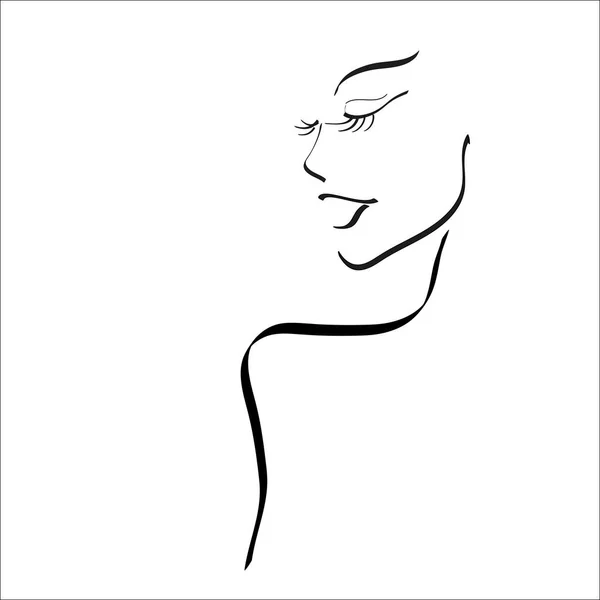

Porady urodowe
Jeśli rano masz opuchnięte powieki, umieść na kilka minut w zamrażarce dwa plastry zielonego ogórka lub wilgotne płatki kosmetyczne. Następnie połóż je na zamkniętych powiekach. Ten zimny zabieg pomoże zredukować opuchliznę i “otworzyć” oczy.
Przed prysznicem użyj szczotki do kąpieli, aby na sucho wymasować ciało. Zaczynając od kostek, masuj w kierunku ud, a potem od dołu pleców po łopatki i od nadgarstków po ramiona. To prosty zabieg, który poprawi krążenie krwi. Po kąpieli, gdy twoje ciało jest jeszcze wilgotne, wetrzyj w nie olejek, aby zachować miękkość i gładkość skóry.
Przed użyciem zalotki ogrzej ją suszarką do włosów. Twoje rzęsy podkręcą się łatwiej.
Śpij z włosami zaplecionymi w warkocz:
Jeśli masz cienkie i płaskie włosy, po umyciu podsusz je i użyj lekkiej pianki. Następnie zapleć włosy. Rano będziesz miała piękne, naturalne fale, które dodadzą fryzurze objętości.

Jeśli twój tusz lekko się wysuszył i zostawia grudki, włóż go na kilka minut do naczynia z gorącą wodą. To sprawi, że będzie miał bardziej płynną konsystencję.
Popraw koloryt skóry olejkiem marchewkowym:
Stosuj naturalny olejek marchewkowy na twarz, szyję i dekolt. Oprócz właściwości pielęgnacyjnych, pomaga uzyskać ładny, opalony koloryt. Jeśli już jesteś opalona, olejek pomoże pogłębić i utrwalić opaleniznę.
Użyj do demakijażu oleju kokosowego:
Olej kokosowy jest skutecznym środkiem do usuwania makijażu. Jest idealny dla ciebie, jeśli lubisz naturalne metody pielęgnacyjne.